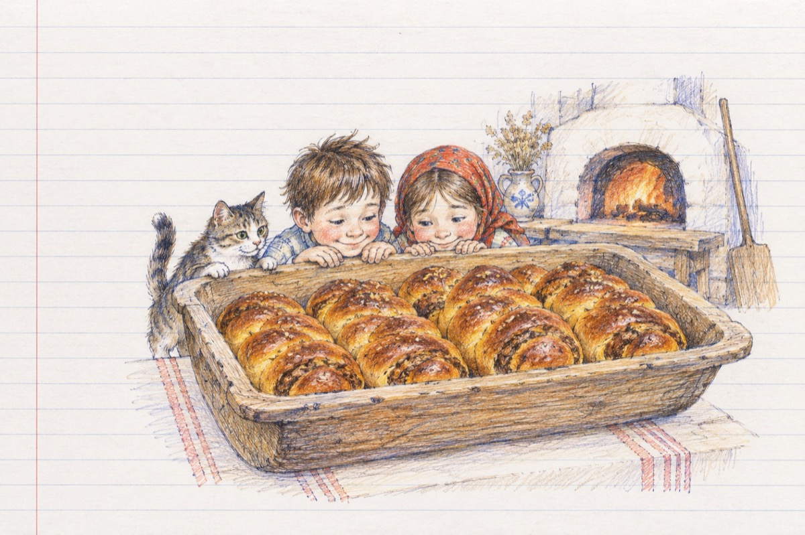

Vinerea Mare
Vinerea Mare.
Vinerea în post de Paști
Făcea mama cozonaci
Ardea focul în cuptor,
Nouă inima de dor,
Noi cu ochii-n aluat,
Motanul torcând pe pat.
Noi gustăm din umplutură
Plănuind o aventură.
Aluatul creștea în tavă,
Pofta-n noi dădea să spargă
Și cu tragla-n ajutor
Scotea jarul din cuptor
Băgând tăvile pe rând
În. cuptorul cel flămând.
Nouă ne ploua în gură
Sperând într-o aventură.
Vinerea era și post
Ne frământam fără rost
Se spunea că e păcat
Ca să te-apuci de furat
Și nici voie de-nfruptat.
Cozonacii ca-n armată
Stăteau rânduri în covată
Cu gândul la haiducie
Pregăteam o tâlhărie,
Vinovații fără vină
Ne ospătam în grădină
Cu motanul după noi
Plin de pofte și nevoi
Mama număra de zor
Băgase zece-n cuptor
Și-o vedem ades oftând
Pân' și cuptoru-i flămând!
Vasile Groza
Apare și în: Privește-mă în ochi (2016).